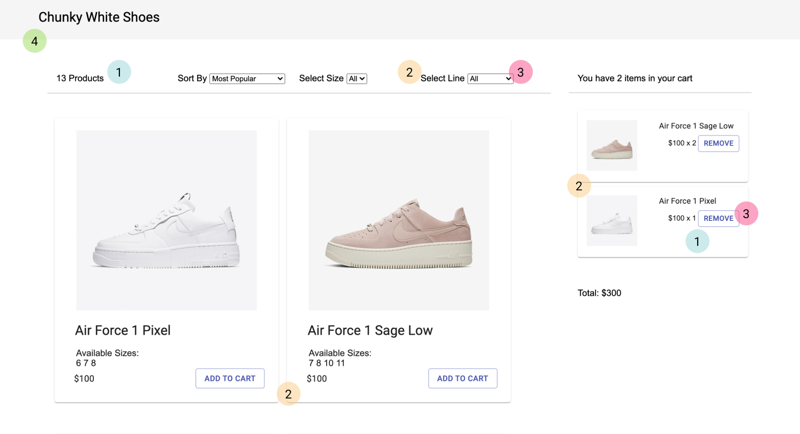

Chunky White Shoes
Developing in React.JS
Introduction
Nowadays, one of the most common and widely used technologies in web development is React.JS. Even for designers, having knowledge of React.JS and other technologies and languages used in front-end and full-stack development is extremely valuable, allowing them to gauge how to best pass designs from the designer to the developer. In this project, I use React.JS to develop a shopping page for Chunky White Shoes (my newfound passion).
The Goal
The page I created was to display a number of shoes that the user can scroll through and buy. My goal is to create a filter and sorting function, as well as the ability to add and remove items from a cart with a total cart price displayed.
For the shoes on the screen, I implemented two filters: filter by size, and filter by shoe line, to allow users the ability to display the shoes in their size and in the line they want. I also added a sorting option, giving the user the ability to sort by lowest to highest price, highest to lowest price, or most popular.
Each shoe can be added to the cart, which is shown on the right of the screen. In the cart, the items added are visible. Each specific product has a quantity value on it, displayed how many of said product the user has added. There is an option to remove the product from the cart, and the total price of the cart is displayed underneath the items listed.
Usability Heuristics
For the usability of my React App, I wanted to focus on having a design that was simple and intuitive. As such, I focused on the following usability heuristics:
I wanted my design to show to the user at all times the status of the interface, so that the information presented is as clear as possible. First, I made it so that the number of products shown is displayed before the product cards, so that if the user wishes to filter, they are aware of how many products they will have to scroll through to see all of them. Next, in my cart, I wanted to let the user know of the quantity per product by displayed it next to the price. Not only does this show the quantity, but it also shows how the quantity affects the total price of the products as well.
By using consistent UI components, my goal was to maximize the learnability of my app. I did so mainly through the consistent use of cards for the products in both the main content area, but also in the cart as well. This allows the user to attribute the card appearance to an item. I also kept the appearances similar between the Add To Cart and Remove buttons to minimize confusion that the users may have between the two buttons. They both serve for manipulating the items in the cart. For the filter, I also used the same action term, ‘Select’, to show to the user that both drop down menus with the ‘Select’ key word have the same use - filtering.
The key to showing the user that they have control over the interface is giving them options to undo actions. In this case, I did so in two ways. First, when the user adds an item to the cart, the Remove button serves as an undo, allowing them to fully control what is in their cart. Secondly, in the Sort By and Select drop downs, in addition to the options that the user can sort and filter by, there is always a default undo any filter and sorting actions that they perform.
For this heuristic, rather than focusing on the aesthetic, I was more focused on displaying only the information essential to the app. This meant the product cards, counter, filters, and cart. Other than that, I refrained from adding any uneccessary elements into the design to best maintain a simple and intuitive interface.
Project Links
The link to the React App: https://arcane-refuge-54755.herokuapp.com/
The link to the Github Repo: https://github.com/dli65/shoppinglist
Reflection
This project was different because rather than focusing on designing the interface, I focused more on the design of the project architecture. Using React.JS showed me how reusable UI components are implemented, and helps me understand how I can better design for development.
I also learned a lot with how different components in React interact. While fundamentally, React uses object-oriented programming functionalities, understanding how to use state and props was a fairly new concept that illustrated to me the interactions between the App class and other components.